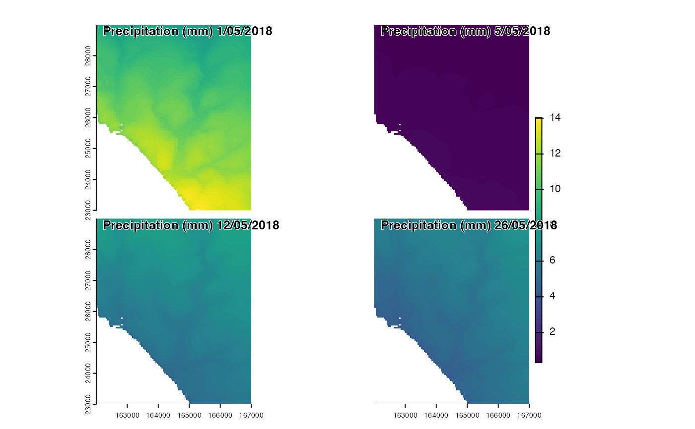

Downscale precipitation accounting for elevation effects
Source:R/spatialdownscale.R
precipdownscale.RdThe function is used to spatially downscale precipitation, performing adjustments for elevation using one of two methods
Usage
precipdownscale(
prec,
dtmf,
dtmc,
method = "Tps",
fast = TRUE,
noraincut = 0,
patchsim = FALSE,
nsim = dim(prec)[3]
)Arguments
- prec
a coarse-resolution array of precipitation (mm)
- dtmf
a high-resolution SpatRast of elevations
- dtmc
a coarse-resolution SpatRast of elevations matching the resolution, extent and coordinate reference system of
prec.- method
One of
TpsorElev(see details).- fast
optional logical indicating whether to do a faster but less accurate Thin-plate spline downscaling. Ignored if
method = "Elev"- noraincut
single numeric value indicating rainfall amounts that should be considered as no rain (see details).
- patchsim
optional logical indicating whether to simulate rain patchiness during downscaling. More realistically captures intensity, but slower.
- nsim
optionally the number of independent rain patchiness simulations to perform. Outputs are temporally interpolated (see details).
Value
a stacked SpatRast of precipitation values matching the resolution,
coordinate reference system and extent of dtmf.
Details
Precipitation is downscaled by computing the total rainfall amount and
fraction of rain days and then adjusting these variables to account for elevation
using either a Thin-plate-spine model (method = "Tps") or by performing an
empirical adjustment calibrated to UK precipitation data (method = "Elev").
If method is set to Tps users have the option to specify whether to perform
a fast, but slightly less accurate Thin-plate spline using fields::fastTps() instead
of fields::Tps(). One totals have been derived, precipitation for each day is adjusted
to ensure that the total amount and number of precipitation days match that expected
by a small amount of precipitation on no precipitation days that are the wettest regionally, or
by setting precipitation days with little rain to zero as required. To accommodate that some
precipitation datasets erroneously include small amounts precipitation (<0.01 mm/day)
on no precipitation days, users have the option to set a cut-off via noraincut. If
patchsim is set to TRUE rainfall patchiness caused by e.g. localized rain showed
is simulated the gstats package. The parameter nsim determines the number of
independent simulations and hence the time intervals at which these simulations
are performed. Simulated anomalies due to local precipitation events are
then interpolated temporally between these periods. This ensures that, over shorter
increments of say and hour, the location and magnitude of these local precipitation
events within each hour retain a degree of inter-dependence more realistically
simulating the trajectory of low pressure systems.
Examples
dtmf<-terra::rast(system.file('extdata/dtms/dtmf.tif',package='mesoclim'))
climdata<-read_climdata(mesoclim::ukcpinput)
prcf<-precipdownscale(climdata$prec, dtmf, climdata$dtm, method="Elev", noraincut=0.01)
terra::panel(c(prcf[[1]],prcf[[5]],prcf[[12]],prcf[[26]]),main=paste0("Precipitation (mm) ",c(1,5,12,26),"/05/2018"))
